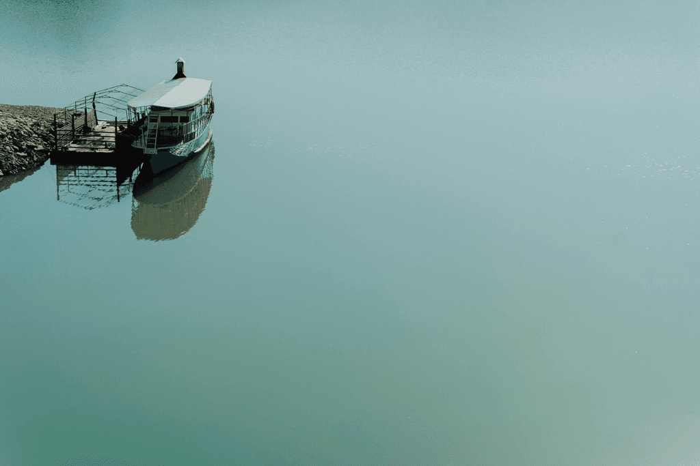
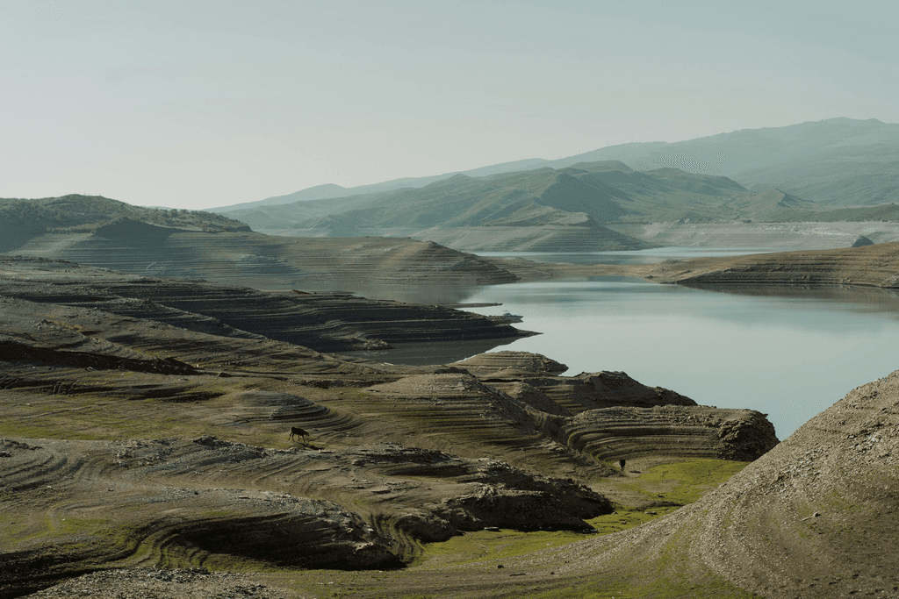

Là où dort l’eau
Somewhere between mountains, the water sleeps. No wind, no sound—only soft light and the memory of curves. This series is a quiet contemplation, an ode to places where silence is finally audible. Minimal, atmospheric, and slow.



Next project
 Champ Silencieux
Champ Silencieux